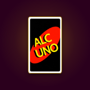

ALCUNO
Réglages
Thème
Sons
Carte tirée, carte dorée, pigeon, ton tour en ligne. iPhone : le mode silencieux coupe les sons.
🔈
🔊
100 %
Vibrations
Android uniquement
Écran toujours allumé
Pendant les parties, le téléphone ne se met pas en veille.
Accessibilité pour les gens bourrés 🍻
Textes et boutons plus gros.
Mode PJ
Tu prends 2x moins cher que dans la version normale.
En ligne : c'est le réglage de l'hôte qui compte, quand il crée la partie.
En ligne : c'est le réglage de l'hôte qui compte, quand il crée la partie.
Rappel « Bois de l'eau 💧 »
Toutes les 30 minutes de partie.
Partie en mémoire
Partager le jeu
tristan-escardo.github.io/Alcuno
À propos
Tu as été déconnecté ?
Entre le code de la partie : tu reprendras ta place.
ou entre le code
Partie en Mode PJ
Nouvelle partie
Qui es-tu ?
Retourner à l'accueil ?
La partie en cours sera perdue.
Retirer l'hôte ?
Veux-tu vraiment retirer l'hôte ?
Supprimer un ou plusieurs joueurs
Joueur actif
Joueurs
Règles
Tout le monde boit sauf toi
Règles du jeu

Installer Alcuno
Le jeu s'ouvre en plein écran depuis ton écran d'accueil, comme une vraie appli, et le mode classique marche même sans réseau.
ALCUNO
Un jeu imaginé en pleine soirée par
Tristan, Ylana, Célien & Roseanna (tous bourrés bien sûr)

📸
La photo des créateurs
arrive bientôt
La photo des créateurs
arrive bientôt
👑 Tristan
👑 Ylana
👑 Célien
👑 Roseanna
Un manstre🍻